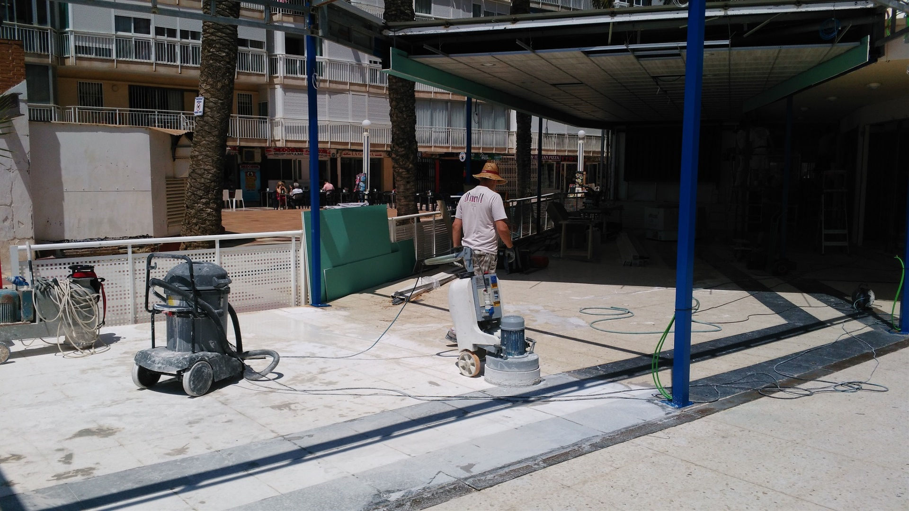
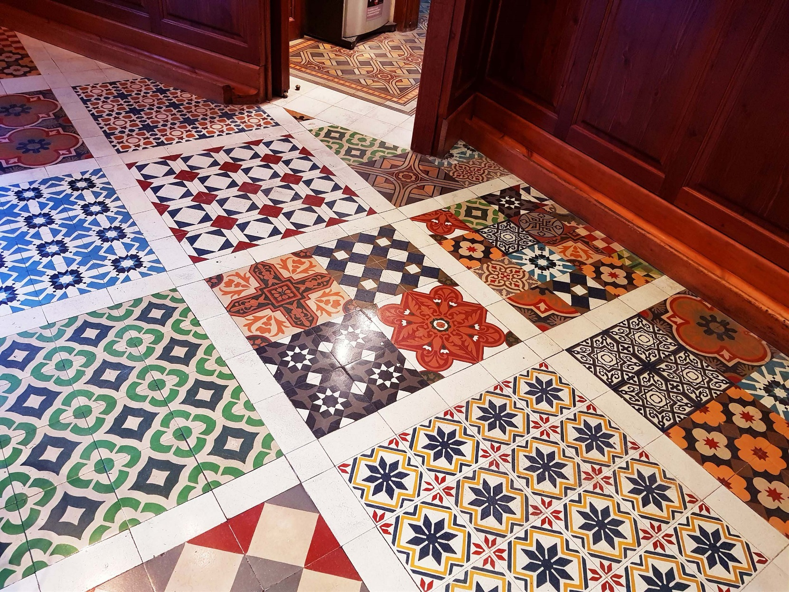
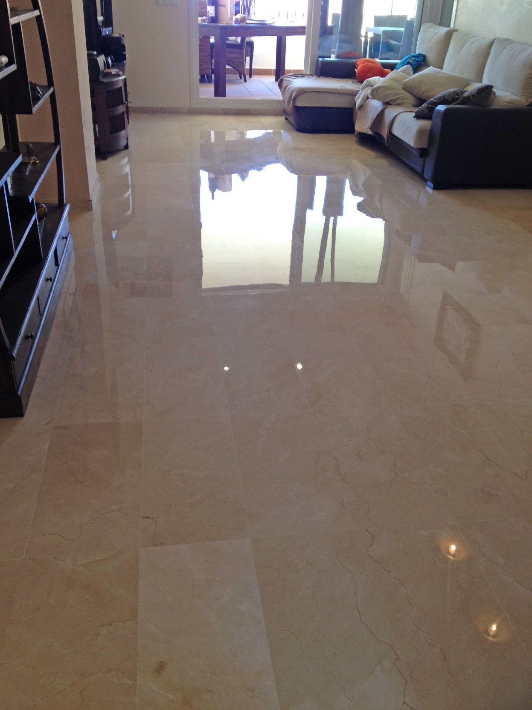

Pulido y cristalizado de suelos y escaleras
Tratamientos para recuperar brillo, uniformidad y presencia en pavimentos y escaleras.
Más informaciónEn Domenech Services S.L. cuidamos suelos, escaleras, textiles y cristales con un enfoque profesional, técnico y orientado al detalle.
Trabajamos para hoteles, empresas, comunidades y particulares que buscan un servicio profesional en limpieza y tratamiento de superficies.
Combinamos maquinaria especializada, experiencia en diferentes materiales y una ejecución cuidada para obtener resultados impecables.
Una propuesta clara y profesional, pensada para clientes que buscan mantenimiento, limpieza especializada y acabados de calidad.
Tratamientos para recuperar brillo, uniformidad y presencia en pavimentos y escaleras.
Más informaciónLimpieza profunda de superficies textiles para mejorar su apariencia, higiene y mantenimiento.
Más informaciónLimpieza profesional de cristaleras, escaparates, ventanales y otras superficies acristaladas.
Más informaciónHemos incorporado fotografías reales para que la web transmita mejor el tipo de trabajos y acabados que realiza Domenech Services.






Domenech Services presta mantenimiento a establecimientos de referencia en Calpe.